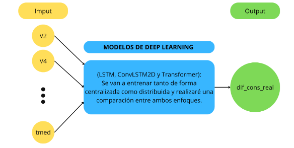
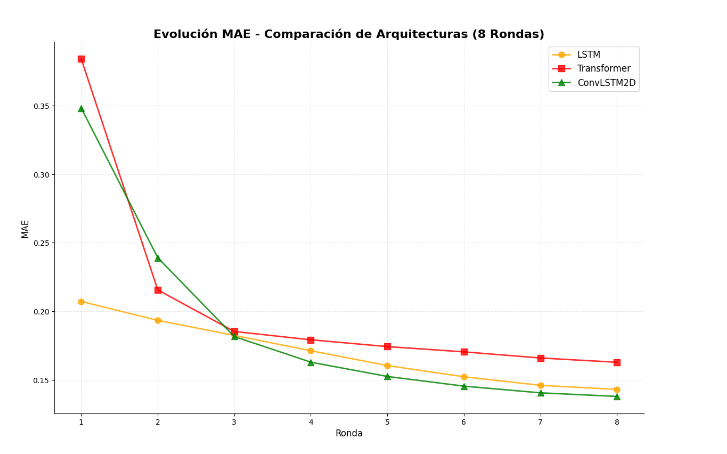

01
Predicción de Consumo Energético con Aprendizaje Federado
Problema
Los modelos de predicción energética requieren grandes volúmenes de datos, pero compartirlos comprometería la privacidad y vulneraría el GDPR. ¿Cómo entrenar un modelo preciso sin centralizar datos sensibles?
Solución
Sistema de aprendizaje federado para un edificio inteligente real: múltiples nodos entrenan localmente y solo comparten los pesos. Implementé y comparé arquitecturas LSTM, ConvLSTM2D y Transformer analizando el trade-off precisión/privacidad/coste comparado con un enfoque de entrenamiento centralizado.

